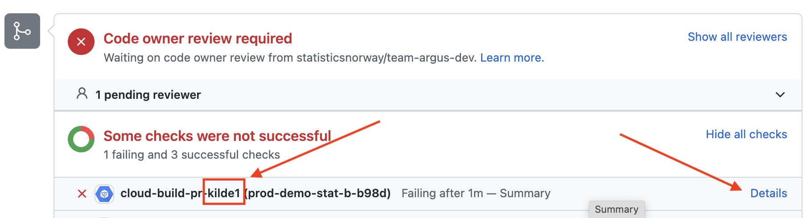
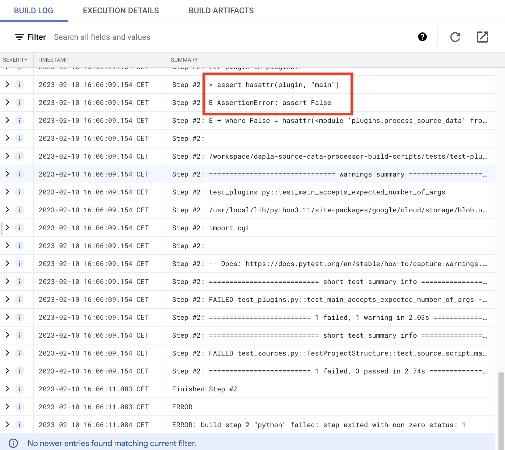
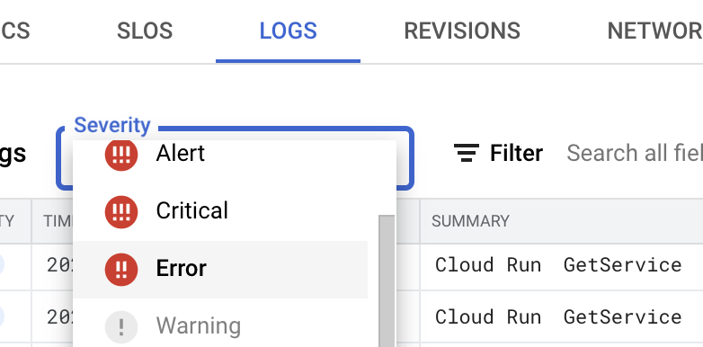

Avansert
Infrastruktur oversikt

Ressurser
Som utgangspunkt, får hver prosesseringsinstans standard ressurstildeling for Cloud Run, dvs. 1 CPU kjerne og 512MB minne. Dette kan være for lite i noen tilfeller, særlig for større kildedatafiler. Hvis det oppleves at mer minne kreves, ta gjerne kontakt med Dapla Kundeservice for å ordne dette.
Tilgjengelige pakker
En liste over Python pakker man kan benytte seg av i process_source_data.py finnes her. Ta gjerne kontakt med Dapla Kundeservice hvis man har behov for ytterligere.
Skalering
Hver kilde kan skalere opp med parallele prosesseringsinstanser. Det gjør det kjappere å prosessere mange filer. I utgangspunktet er dette begrenset til 5 parallele instanser, men det kan økes ved behov.
Validering
For å gi raskt tilbakemelding på noen mulige feilsituasjoner, så kjøres det enkel validering på kilde config og process_source_data.py når en PR er opprettet.
Hvis valideringen feiler, så må feilen rettes før PRen merges.
Testene feiler hvis:
- Kildemappen ikke har et python script kalt process_source_data.py med metodesignaturen, som beskrevet her.
- Kildemappen ikke har en yaml fil og en gyldig folder_prefix definert, som i dette eksempelet.
- Python scriptet ikke kan importeres av tjenesten. Tjenesten støtter kun disse tredjeparts pakkene.
- Hvis Pyflakes finner feil med kildens Python script.
Validerings logger
Hvis validerings testene feiler kan det være nyttig å se på loggene for å finne frem til feilen.
- Finn frem til testen som feiler, i bildet feiler valideringstestene for kilde1. Trykk så på lenken “Details” som vist i bilde under. 
- På siden du nå har kommet til skal det være en tabell som heter “Build Information”, trykk på lenken i Build kolonnen.

- Du har nå kommet frem til loggene, se etter indikasjoner på feil. I eksemplet under ser vi at testen test_main_accepts_expected_number_of_args feiler fordi
process_source_data.pymangler en main funksjon.  - Fiks feilen og push endingen til samme branch, testen vil da starte på nytt.
Utrulling
Endringer til process_source_data.py blir automatisk rullet ut når en PR er merget til main branchen. Utrullingsprosessen tar noe tid, ca. 2-3 minutter fra branchen er merget til tjenesten er oppdatert, for å bekrefte at tjenesten er rullet ut kan du følge stegene i neste avsnitt.
Bekrefte utrulling
Stegene under viser hvordan man går frem for å finne resultat av utrullingen av kilden “ledstill” for teamet “arbmark-skjema”. Og forutsetter at koden er pushet til main branchen.
- Naviger til GitHub.
- I søkefeltet oppe i venstre hjørne skriv arbmark-skjema og klikk “Jump to” arbmark-skjema-iac. Som i bilde under.

- Når utrullingen er ferdig vil en av disse ikonene vises, grønn hake betyr at tjeneste er rullet ut med koden som ligger i main og at nye filer blir behandlet med koden som ligger der.
 . Rødt kryss indikerer at utrullig har feilet.
. Rødt kryss indikerer at utrullig har feilet. 
Se etter symbolene der hvor den røde pilen i bilde under peker. I eksempel er utrulligen vellykket.
Monitorering av tjenesten
Man får en oversikt over kildene man har konfigurert prosessering for og statusen på dem ved hjelp av konsollet på GCP. Der navigerer man til siden for Cloud Run (se Figur 2) som er kjøremiljøet som kildedata prosessering benyttes av. Eksempel URl er: https://console.cloud.google.com/run?project=<teamets-prosjekt-id>
Her får man en oversikt av ressursbruk og loggene til prosesseringen.

Logger
Etter du har valgt kilden kan du se logger ved å velge fanen “LOGS”. Her ligger alle logger for den spesifikke kilden. For å få bedre oversikt over eventulle feil kan man sette severity til error. Dette vil uten ekstra konfigurasjon gi oversikt over alle uhåndterte exceptions. 
Ubehandlede filer
Hvis en fil blir mottatt av tjenesten, men ikke lar seg behandle blir det skrevet til loggen. Man kan få en oversik over hvilke filer som ikke har blitt prosessert ved å søke etter: Could not process object.